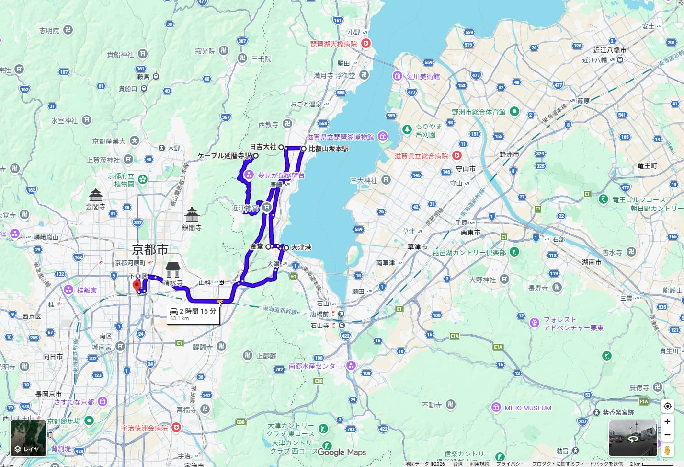
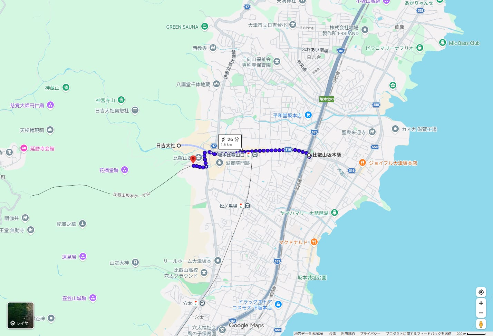
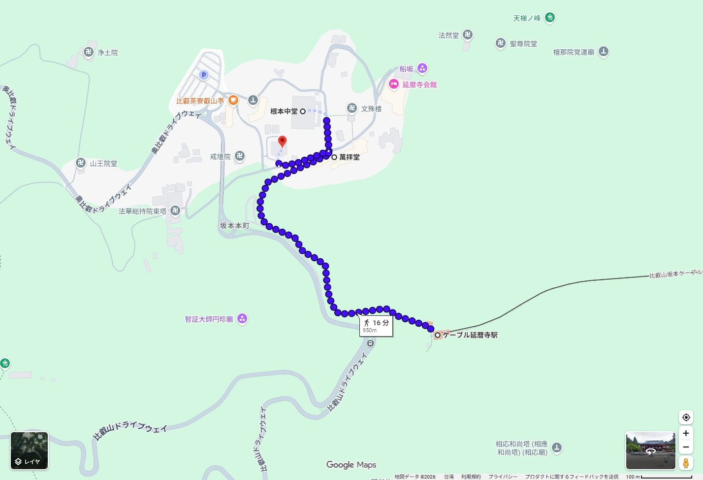
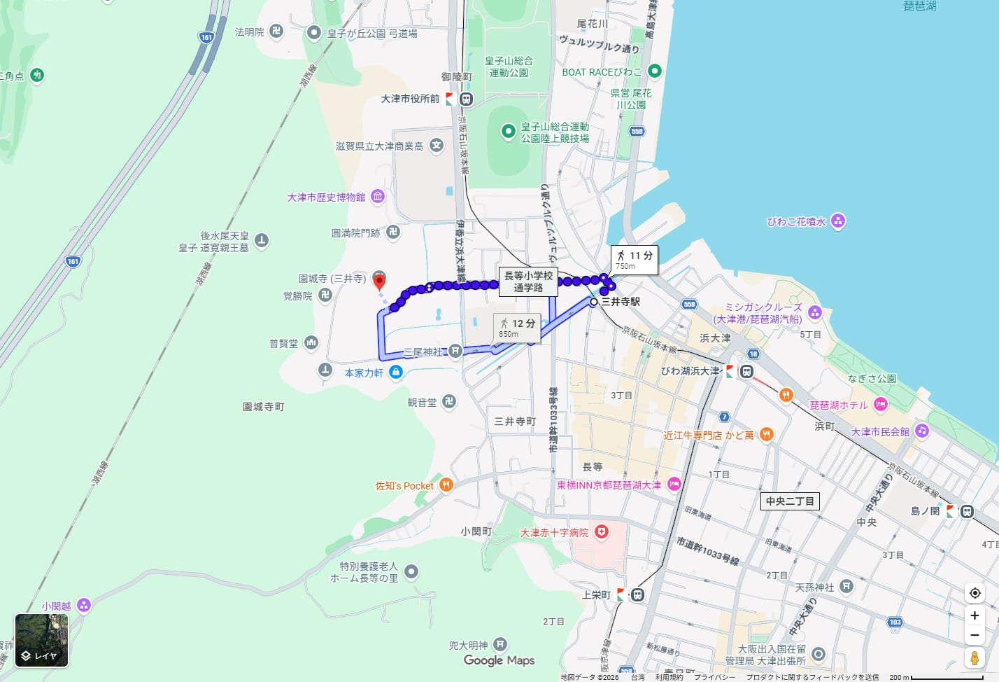
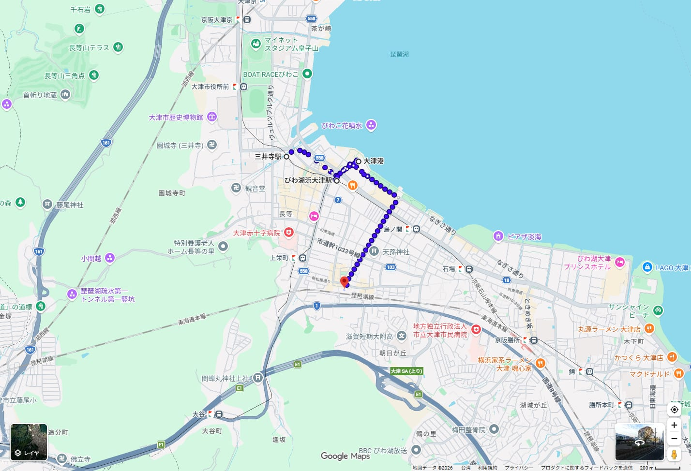
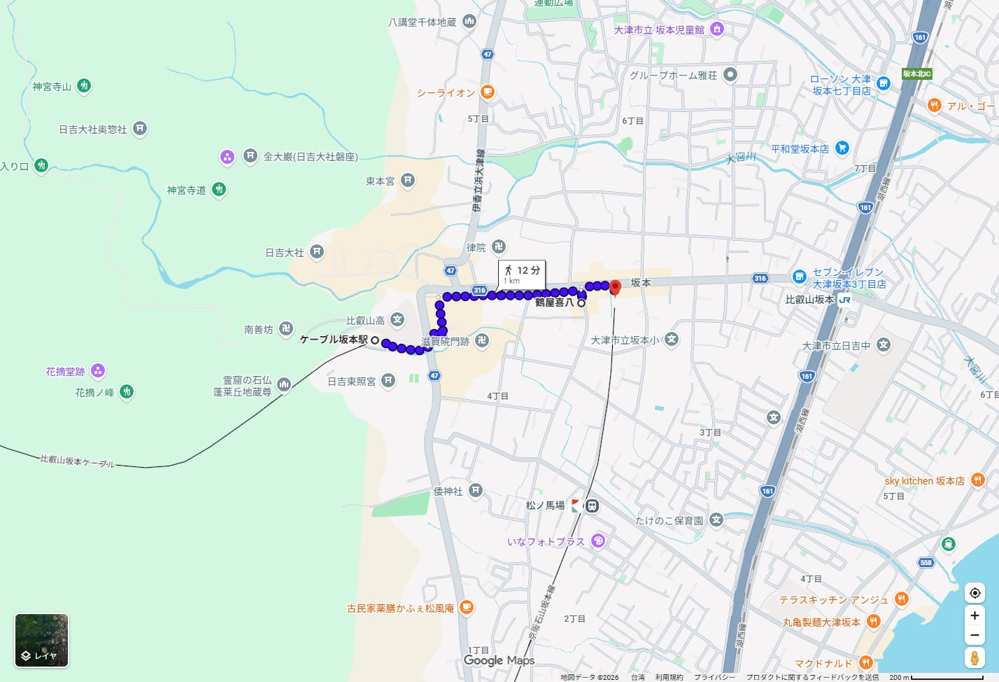
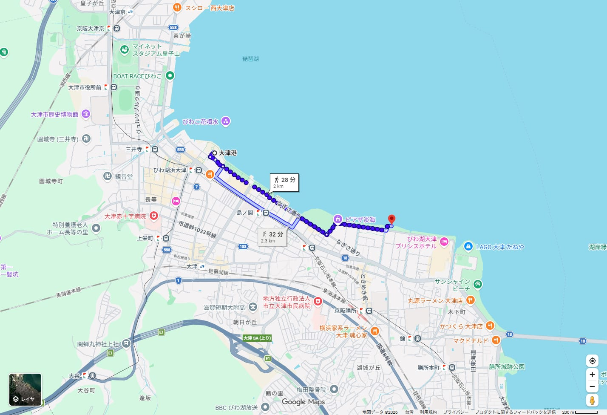

比叡山・大津一日手冊 日吉大社・延暦寺・三井寺2027/04/08（四）1 / 24
2027.04.08木曜日
比叡山・大津一日
日吉大社・延暦寺・三井寺
觀光＋御朱印 行程說明書
 Saigen Jiro・CC0・2019 年攝・Wikimedia Commons
Saigen Jiro・CC0・2019 年攝・Wikimedia Commons
2 人，京都站出發並返回。搭 JR 湖西線到比叡山坂本，走坂本老街到日吉大社，10:00 坐日本最長的坂本ケーブル上延暦寺東塔，中午下山吃蕎麥麵，下午搭京阪到三井寺，最後在びわ湖浜大津、大津港散步，傍晚搭 JR 回京都。
查證等級：✅ 官方原文 📷 omairi.club 訪客投稿（附日期） ⚠️ 二手資料或估算。時刻與費用以 2026/10/02 查到的資料為準，2027 年版尚未公布的部分已在內文標示。
比叡山・大津一日手冊 日吉大社・延暦寺・三井寺2027/04/08（四）2 / 24
基旅行基本資訊
| 日期 | 2027/04/08（四）。平日。日本 2027 年祝日表未逐項核對 ⚠️ |
|---|
| 人數 | 2 人 |
|---|
| 出發・結束 | 京都站。住宿在京都站周邊 |
|---|
| 時間 | 07:47 京都站發，約 17:52 回到京都站。19:00 前解散，保留約 70 分鐘緩衝 |
|---|
| 交通 | JR 湖西線、坂本ケーブル、京阪石山坂本線、JR 琵琶湖線＋步行。不搭巴士，也不需要預約座位 |
|---|
| 步行量 | 各段採用值合計約 2 小時 20 分 ⚠️，另加境內走動。延暦寺東塔與三井寺境內有石階與坡道（我的估算） |
|---|
| 預估費用 | 每人約 ¥8,600～¥11,100（交通、門票、御朱印、午餐）。明細見第 19 頁 |
|---|
| 氣溫 | 山上比市區低，延暦寺一帶約冷 4℃ ⚠️（以標準氣溫遞減率推估），帶薄外套 |
|---|
| 櫻花 | 日吉大社參道約 150 株，見頃 4 月初旬 ✅。三井寺境內有千株以上 ✅。4/8 是否盛開要看當年 ⚠️ |
|---|
| 預約 | 本日沒有需要事先預約的項目。ケーブル與京阪當日購票、刷 IC 卡 |
|---|
今日特色
- 一路由北往南，不折返。坂本（北）→ 比叡山 → 坂本 → 三井寺 → 大津港（南），最後走回 JR 大津站。
- 坂本ケーブル全長 2,025 m、11 分✅，是日本最長的纜車，昭和 2 年開業 ✅。
- 4/8 是延暦寺根本中堂的「8 日縁日」✅，萬拝堂授與縁日限定的紺紙金字御朱印。
- 根本中堂內部整修中，2026/1～2028/1 不能入內✅。這一天看外觀與覆屋，不看本尊。
可信度圖例
| 標記 | 意思 | 本手冊的做法 |
|---|
| ✅ | 官方原文核實 | 實際開啟寺社、鐵道、店家官網確認。搜尋引擎摘要不算。 |
| 📷 | omairi.club 訪客投稿 | 附參拜日期，只用來判斷直書き／書置き、授與位置。 |
| ⚠️ | 二手資料或估算 | 轉乘網站、Google Maps 估算、我的推算。 |
公休與休運檢查（2027/04/08 四）
| 地點 | 結果 | 依據 |
|---|
| 日吉大社 | 開放（無休） | 官網寫參拜時間、授與所時間，未列公休 ✅ |
| 延暦寺 東塔 | 開堂 9:00～16:00（通年） | 官網 ✅。4/4～4/11 御修法在根本中堂 ✅ |
| 坂本ケーブル | 8:00～17:30 每 30 分一班 | 官網 3～11 月時刻 ✅ |
| 三井寺 | 年中無休 | 官網 ✅ |
| 鶴屋喜八 | 營業 11:00～16:00 | 官網。定休日 2027 年表未公布，2026 年表 4/20 休 ⚠️ |
| 京阪・JR | 使用平日時刻表 | 官網 2026/10 版 ✅，2027 年版尚未公布 |
基出發前最需要再確認的 5 件事
- JR 與京阪的 2027 年度時刻。本手冊用 JR 西日本 2026/10/03 改正版（平日）與京阪官網 PDF。2027 年 3 月前後再查 07:47 京都発、14:09 坂本比叡山口発、16:24 三井寺発、17:41 大津発是否仍在。
- 根本中堂的現況。官網寫內部 2026/1/6～2028/1 不能入內 ✅；修學ステージ（屋頂見學台）只到 2026 年 12 月前後 ✅。素屋根（覆屋）何時拆、4 月能看到什麼，等官網更新後確認。
- 延暦寺各堂御朱印的初穂料與授與時間。官網只列種類與授與場所 ✅，只有萬拝堂特別御朱印寫明 ¥1,000 ✅。其餘我抓 ¥500 的估算 ⚠️。
- 日吉大社 9:00 前能不能入苑。官網寫開門 6:00、參拜與授與所 9:00 ✅，入苑協賛料在西受付繳 ✅，受付開始時間未載 ⚠️。本手冊 08:50 到、9:00 入苑。
- 鶴屋喜八 2027/4/8 是否營業。2026 年定休日表有 4/20，2027 年表未公布 ⚠️。備案是比叡・三九良（週一、第 2 週二休）✅。
先知道：我先前的版本寫過「根本中堂 2026 年 3 月完工」，這是錯的。官網是整修到約 2028 年初，內部不能入內。同一版的「大津港旁的芝櫻」也不對：芝櫻在なぎさのプロムナード，離大津港約 2 km，4/8 才剛要開。兩處已改。
日文地名對照（貼進 Google Maps 搜尋用）
| 日文 | 讀音 | 中文 |
|---|
| 京都駅 | きょうとえき | 京都站，07:47 湖西線普通為 3 番線 ✅ |
| 比叡山坂本駅 | ひえいざんさかもとえき | JR 湖西線，去程下車 |
| 日吉大社／西本宮／東本宮 | ひよしたいしゃ／にしほんぐう／ひがしほんぐう | 山王總本宮 |
| ケーブル坂本駅／ケーブル延暦寺駅 | けーぶるさかもとえき／けーぶるえんりゃくじえき | 坂本ケーブル兩端站 |
| 比叡山延暦寺／根本中堂 | ひえいざんえんりゃくじ／こんぽんちゅうどう | 東塔的中心堂 |
| 萬拝堂／大講堂／大黒堂 | まんぱいどう／だいこうどう／だいこくどう | 東塔御朱印處 |
| 手打蕎麦 鶴屋喜八 | てうちそば つるやきはち | 午餐 |
| 坂本比叡山口駅 | さかもとひえいざんぐちえき | 京阪石山坂本線，午餐後上車 |
| 三井寺駅／三井寺（園城寺） | みいでらえき／みいでら（おんじょうじ） | 京阪三井寺站、天台寺門宗總本山 |
| びわ湖浜大津駅／浜大津アーカス | びわこはまおおつえき／はまおおつあーかす | 京阪終點附近、商場 |
| びわ湖大津港／大津湖岸なぎさ公園 | びわこおおつこう／おおつこがんなぎさこうえん | 遊覽船碼頭／湖畔公園 |
| JR大津駅 | じぇいあーるおおつえき | JR 琵琶湖線，回程上車 |
| 御朱印／直書き／書き置き | ごしゅいん／じかがき／かきおき | 朱印／現場手寫／預先寫好的紙 |
行今日行程總覽
| 時間 | 地點 | 行程 | 交通 | 停留 |
|---|
| 07:47→08:04 | 京都駅→比叡山坂本駅 | JR 湖西線（近江舞子行） | JR ✅ | 17 分 |
| 08:05～08:50 | 坂本老街→日吉大社 | 穴太衆積みの石垣、赤鳥居 | 步行 20 分＋散步 ⚠️ | 45 分 |
| 08:50～09:40 | 日吉大社 | 西本宮・東本宮、御朱印（9:00 起） | 境內 | 50 分 |
| 09:40～10:00 | ケーブル坂本駅 | 買票、看大正期駅舎 | 步行 6 分 ⚠️ | 20 分 |
| 10:00→10:11 | 坂本ケーブル | 往ケーブル延暦寺駅 | 纜車 ✅ | 11 分 |
| 10:11～12:20 | 延暦寺 東塔 | 根本中堂（外觀）、萬拝堂、大講堂、大黒堂 | 步行 13 分 ⚠️ | 約 2 小時 |
| 12:30→12:41 | 坂本ケーブル | 下山 | 纜車 ✅ | 11 分 |
| 12:41～13:50 | 手打蕎麦 鶴屋喜八 | 午餐 | 步行 10 分 ⚠️ | 約 60 分 |
| 13:50～14:09 | 坂本比叡山口駅 | 步行 2 分後候車 | 步行 ⚠️ | 約 17 分 |
| 14:09→14:22 | 京阪石山坂本線 | 往三井寺駅 | 京阪 ✅ | 13 分 ⚠️ |
| 14:35～16:10 | 三井寺 | 金堂、鐘楼、三重塔、観音堂、御朱印 | 步行 11 分 ⚠️ | 95 分 |
| 16:24→16:26 | 京阪 | 往びわ湖浜大津駅（1 站） | 京阪 ✅ | 約 2 分 ⚠️ |
| 16:26～17:15 | 浜大津アーカス・大津港 | 湖畔散步 | 步行 | 約 50 分 |
| 17:41→約 17:52 | JR大津駅→京都駅 | JR 琵琶湖線 | 步行 20 分＋JR ✅ | 約 10 分 ⚠️ |
今天的時間界線
| 項目 | 時段 | 備註 |
|---|
| JR 去程（本命） | 京都 07:47 発→比叡山坂本 08:04 着 | 備案 08:13 発→08:31 着，晚 27 分 ✅ |
| 日吉大社 | 開門 6:00～、參拜與授與所 9:00～16:00、入苑協賛料 ¥500 | 9:00 前入苑可否未載 ⚠️；官網 ✅ |
| 坂本ケーブル | 3～11 月每小時 00 分、30 分發車，8:00～17:30 | 本命 10:00 上、12:30 下；備案 13:00 下 ✅ |
| 延暦寺 東塔 | 9:00～16:00（巡拝受付 15:45 止） | ✅ |
| 鶴屋喜八 | 11:00～16:00（L.O. 15:30） | 賣完即關店 ✅ |
| 京阪 坂本比叡山口 平日 | 13:49、14:09、14:29、14:47 發（往三井寺方向） | 14:09 是本命，錯過搭 14:29 ✅ |
| 三井寺 | 9:00～16:30，受付 16:00 止；文化財收藏庫 9:30～ | 16:00 前一定要入山 ✅ |
| 京阪 三井寺 平日 往浜大津 | 16:02、16:09、16:17、16:24、16:33、16:39 發 | 本命 16:24 ✅ |
| JR 大津 往京都（平日） | 17:32 新快速、17:41、17:52、18:02、18:11、18:21 | 19:00 前到京都，最晚約 18:47 發（到站時間為估算）⚠️ |
行今日路線地圖

標出京都駅、比叡山坂本駅、日吉大社、ケーブル延暦寺駅、三井寺金堂、びわ湖大津港。紫線是 Google 的開車路線，只用來串起各點，實際移動依本手冊的鐵道與纜車・Google Maps 截圖・地圖資料 ©2026 Google・截取日期 2026/10/02
行程順序示意圖（示意圖，非地理比例）
京都▶比叡山坂本▶日吉大社▶ケーブル坂本▶延暦寺東塔▶鶴屋喜八▶坂本比叡山口▶三井寺▶浜大津▶大津港▶JR大津▶京都
為什麼這樣走最順
三個景點都在比叡山東麓與琵琶湖西岸，南北排成一條線。從最北的坂本開始，上午用 10:00 的纜車上山，中午下山吃飯，午後往南一路到大津市區，不用折返。延暦寺一定要在上午，因為纜車的班次與 16:00 閉堂都是硬限制；三井寺放在下午，剛好趕在 16:00 入山截止前。最後的湖畔沒有時間壓力，累了可以直接縮短。
順路加入的
- 坂本老街的石垣：JR 站走到日吉大社的路上
- 大宮橋、山王鳥居：日吉大社境內
- 大正期的ケーブル坂本駅舎：登録有形文化財 ✅
- 三井の晩鐘、弁慶の引き摺り鐘：三井寺境內
- 浜大津アーカス：京阪站旁，可吃點心、買伴手禮
值得去但不排的
- 延暦寺 西塔・横川：要另搭巴士，東塔以外不排 ✅
- 八王子山・奥宮：單程約 30 分登山 ✅
- 生源寺（4/8 花まつり）：山麓寺院，本日未排，距離未查 ✅
- なぎさ公園のシバザクラ：離大津港約 2 km，4/8 才剛要開 ✅
- 三井寺 光浄院・勧学院客殿：2027/7/31 前停止特別拝観 ✅
有沒有更好的走法
若先去三井寺（9:00 開）再上延暦寺，要從大津往北折返，下午才上山，而延暦寺 15:45 受付截止、16:00 閉堂 ✅，會很趕。所以不採用。
比叡山・大津一日手冊 日吉大社・延暦寺・三井寺2027/04/08（四）6 / 24
行區段放大地圖

① 比叡山坂本駅 → 日吉大社 → ケーブル坂本駅・Google Maps 截圖・地圖資料 ©2026 Google・截取日期 2026/10/02

② ケーブル延暦寺駅 → 萬拝堂・根本中堂（Google 顯示 16 分、950 m）・Google Maps 截圖・地圖資料 ©2026 Google・截取日期 2026/10/02

③ 三井寺駅 → 三井寺金堂・Google Maps 截圖・地圖資料 ©2026 Google・截取日期 2026/10/02

④ 三井寺駅 → びわ湖浜大津 → 大津港 → JR大津駅・Google Maps 截圖・地圖資料 ©2026 Google・截取日期 2026/10/02
各段步行時間（Google 估算，⚠️）
| 區段 | Google | 本手冊採用 | 說明 |
|---|
| 比叡山坂本駅 → 日吉大社 | 20 分、1.2 km（三條路線 20～23 分） | 45 分 | 多留 25 分走坂本老街、看石垣。官網寫 JR 站步行約 20 分 ✅ |
| 日吉大社 → ケーブル坂本駅 | 6 分、350 m | 6 分 | 上坡約 25 m |
| ケーブル延暦寺駅 → 根本中堂 | 13 分、750 m（至萬拝堂 16 分、950 m） | 約 15 分 | 有坡道 |
| 根本中堂 → 萬拝堂 → 大講堂 | 1 分、81 m；2 分、130 m | 各 2～3 分 | 三處相鄰 |
| 萬拝堂 → 大黒堂 → 大講堂 | 1 分、76 m；3 分、180 m | 各 2～3 分 | 大黒堂在一隅會館前廣場 ✅ |
| 大講堂 → ケーブル延暦寺駅 | 12 分、800 m | 約 15 分 | 預留 12:30 班次 |
| ケーブル坂本駅 → 鶴屋喜八 | 10 分、800 m（10～13 分） | 10 分 | – |
| 鶴屋喜八 → 坂本比叡山口駅 | 2 分、170 m | 2 分 | 官網寫站下車 1 分 ✅ |
| 三井寺駅 → 三井寺金堂 | 11 分、750 m | 11 分 | 官網寫到仁王門約 10 分 ✅ |
| びわ湖浜大津 → 大津港 → JR大津駅 | 4 分、290 m；20 分、1.4 km | 4 分＋20 分 | 浜大津直接走 JR 大津為 16 分 / 1.1 km |
行交通總覽
| 段 | 起訖 | 工具 | 時間 | 費用（每人） | 來源 |
|---|
| 1 | 京都→比叡山坂本 | JR 湖西線 07:47 発（近江舞子行，不用轉乘） | 17 分 | ¥320（駅探 16.6 km） | ⚠️ |
| 2 | 比叡山坂本→日吉大社 | 步行 | 20 分 | – | ⚠️ |
| 3 | 日吉大社→ケーブル坂本駅 | 步行 | 6 分 | – | ⚠️ |
| 4 | ケーブル坂本→延暦寺 | 坂本ケーブル 10:00 発 | 11 分 | 往復 ¥1,830（單程 ¥960） | ✅ |
| 5 | 延暦寺東塔境內 | 步行（含 ケーブル延暦寺駅往返） | 約 40 分 | 巡拝料 ¥1,000 | ✅ |
| 6 | 延暦寺→坂本 | 坂本ケーブル 12:30 発 | 11 分 | 含於往復票 | ✅ |
| 7 | ケーブル坂本→鶴屋喜八→坂本比叡山口 | 步行 | 10 分＋2 分 | – | ⚠️ |
| 8 | 坂本比叡山口→三井寺 | 京阪石山坂本線 14:09 発 | 13 分 | ¥280 | ✅ |
| 9 | 三井寺駅→三井寺 | 步行 | 11 分 | 入山料 ¥800 | ✅ |
| 10 | 三井寺→びわ湖浜大津 | 京阪石山坂本線 16:24 発（1 站） | 約 2 分 | ¥200 | ✅ |
| 11 | 大津港→JR大津駅 | 步行 | 20 分 | – | ⚠️ |
| 12 | JR大津→京都 | JR 琵琶湖線 17:41 発 | 約 10 分 | ¥200（駅探 10.0 km） | ⚠️ |
可以比較的選項：坂本ケーブル官網銷售「延暦寺・坂本周遊一日乗車券」¥2,500（含巴士、ケーブル、延暦寺拝観券）✅。分開買是往復 ¥1,830＋巡拝 ¥1,000＝¥2,830，差 ¥330。但這張票含的巴士用不到，2027 年 4 月是否仍販售、使用條件與購買期限我沒有核實 ⚠️，因此本手冊用分開買的價格。
交通小提醒
- ケーブル只在每小時 :00 與 :30 發車，上下行同時發車。錯過就等 30 分，延暦寺回程班次是本日唯一的硬性時間 ✅
- 京阪石山坂本線可以刷 IC 卡。坂本比叡山口→三井寺→びわ湖浜大津的票價是官網運賃表 ✅，刷卡扣的金額以車站顯示為準 ⚠️
- JR 與京阪都是平日 2026/10 時刻。2027 年 4 月班次可能微調，出發前一週用 JR 西日本「駅の時刻表」與京阪官網再查。
- 回程 JR 有兩種等級：新快速約 9～10 分，普通約 11～12 分，差距不大 ⚠️
備案
| 情境 | 做法 |
|---|
| 錯過 07:47 JR | 搭 08:13 發的普通，08:31 到比叡山坂本。日吉大社縮短到約 30 分，仍趕得上 10:00 纜車 ✅ |
| 趕不上 10:00 纜車 | 搭 10:30，延暦寺只留 1 小時 50 分，大黒堂以後的堂不看 |
| 趕不上 12:30 下山纜車 | 搭 13:00，13:11 到坂本；午餐縮成 40 分仍能搭 14:09 京阪（我的估算） |
| 錯過 14:09 京阪 | 14:29 發，到三井寺約 14:42，三井寺減 15 分 ✅ |
行鐵路專頁
JR 湖西線（京都→比叡山坂本） 平日，2026/10 版 ✅
| 京都発 | 種別・行先 | 比叡山坂本着 | 用途 |
|---|
| 07:47 | 普通 近江舞子行（3 番線） | 08:04 | 本命 |
| 08:13 | 普通 近江舞子行 | 08:31 | 備案（晚 27 分） |
JR 西日本「駅の時刻表」京都駅（山科・堅田・近江今津方面）與比叡山坂本駅（堅田・近江今津方面），2026/10/08（木）表示，改正日 2026/10/03 ✅。07:29、08:09 京都発的特急サンダーバード，比叡山坂本駅的時刻表上沒有特急，不能搭。
坂本ケーブル 3～11 月 ✅
| 發車 | 每小時 00 分、30 分，8:00～17:30（上、下行同時發車） |
|---|
| 時間・距離 | 約 11 分、全長 2,025 m，昭和 2 年（1927）開業，日本最長 |
|---|
| 運賃 | 大人 單程 ¥960、往復 ¥1,830；小學生 單程 ¥480、往復 ¥920。2026/4/1 起新運賃 |
|---|
| 今日班次 | 09:00～10:00 之間要搭的是 10:00；回程 12:30（備案 13:00） |
|---|
| 營運狀況 | 官網 2026/10/02「通常通り運行中」。2027/4 的狀況無法預先確認 ⚠️ |
|---|
京阪石山坂本線 平日，2026/10 版 ✅
| 站 | 往びわ湖浜大津・石山寺方向的平日發車（節錄） |
|---|
| 坂本比叡山口 | 13:09、13:29、13:49、14:09、14:29、14:47、15:09 |
| 三井寺 | 16:02、16:09、16:17、16:24、16:33、16:39、16:47、16:55 |
| 區間 | 運賃 | 距離 | 來源 |
|---|
| 坂本比叡山口 → 三井寺 | ¥280 | 6.9 km | 京阪官網運賃表 2025/10/01 改定 ✅ |
| 三井寺 → びわ湖浜大津 | ¥200 | 0.5 km | 同上 ✅ |
時刻取自京阪官網的 PDF 時刻表（石山寺方面・平日）畫面，坂本比叡山口發的 8:31 等少數班次標「近」只到近江神宮前，本日用的 14:09 沒有標記 ✅。
JR 琵琶湖線（大津→京都） 平日，2026/10 版 ✅
大津駅發往京都方向：17:32（新快速）、17:41、17:52（普通・京都行）、18:02、18:11、18:21（普通・京都行）。本命 17:41，約 17:52 抵達 ⚠️（到站時間依駅探「約 9 分」與普通停靠推估）。運賃 ¥200 ⚠️。
六個關鍵班次與錯過時的備案
| 班次 | 本命 | 錯過了怎麼辦 |
|---|
| JR 京都→比叡山坂本 | 07:47 発 | 08:13 発，08:31 到。日吉大社縮短，仍趕得上 10:00 纜車 ✅ |
| ケーブル 上山 | 10:00 発 | 10:30 発。延暦寺剩 1 小時 50 分 ✅ |
| ケーブル 下山 | 12:30 発 | 13:00 発，13:11 到坂本，午餐縮成 40 分 ✅ |
| 京阪 坂本比叡山口→三井寺 | 14:09 発 | 14:29 発，約 14:42 到三井寺，少約 20 分 ✅ |
| 京阪 三井寺→びわ湖浜大津 | 16:24 発 | 16:33 或 16:39 発，浜大津的散步縮短 ✅ |
| JR 大津→京都 | 17:41 発 | 17:52（普通）、18:02、18:11；19:00 前到京都的最晚班約 18:47（估算）⚠️ |
行出發段落 07:47 京都→08:04 比叡山坂本→坂本老街
為什麼這樣排
日吉大社的授與所 9:00 才開 ✅，所以不需要搭更早的車。07:47 是最接近 07:40 的實際班次；08:04 到站後走老街，邊看石垣邊走，08:50 左右抵達赤鳥居前。
現場看什麼
- 穴太衆積みの石垣。坂本是延暦寺的門前町，路邊與民宅圍牆的石垣是這一帶的特色。Google 的路線有三條，20～23 分 ⚠️，選靠水路、石垣最多的那條。
- 比叡山坂本駅。JR 站本身沒有特別看點，站前有計程車與巴士乘車處，但本日不搭 ✅
- 日吉大社入口的赤鳥居與大宮橋。日吉大社官網寫入口赤鳥居進去、於西受付繳入苑協賛料 ✅
基本資訊
| 出發 | 京都駅 07:47（近江舞子行普通，3 番線） ✅ |
|---|
| 到達 | 比叡山坂本駅 08:04 ✅，車資約 ¥320 ⚠️ |
|---|
| 步行 | Google 20 分、1.2 km ⚠️；官網寫約 20 分 ✅。採用 45 分含散步 |
|---|
| 地圖 | 比叡山坂本駅 → 日吉大社（Google Maps） 開啟車站位置 |
|---|
| 廁所 | 日吉大社境內有 3 處與入口赤鳥居前有觀光者用廁所 ✅ |
|---|
観日吉大社 08:50～09:40・山王總本宮
推薦理由
全國約 3,800 社日吉・日枝・山王神社的總本宮，鎮座約 2,100 年，境內國寶 2 棟、重要文化財 17 棟，面積約 468,000 ㎡ ✅。西本宮、東本宮是日吉造，背面像被切掉一半，是這裡獨有的樣式 ✅。境內有水路貫穿，不是平地上的神社。
現場看什麼
- 西本宮・東本宮本殿（國寶）。屋頂後半部被切掉的日吉造，木製的獅子與狛犬坐在本殿屋頂上 ✅
- 山王鳥居。明神鳥居上加三角破風，象徵神佛習合 ✅
- 大宮橋與境內水路。要過大宮川的石橋才能入境內 ✅
- 參道的櫻花。石の大鳥居到入口的縣道沿線約 150 株，見頃 4 月初旬 ✅；4/8 是否仍在花期看當年 ⚠️
基本資訊
| 開門 | 4～9 月 6:00～16:00（西・東本宮）；參拜 9:00～16:00；授與所 9:00～16:00 ✅ |
|---|
| 入苑協賛料 | 大人 ¥500、中高生 ¥300、小學生以下免費。西受付繳 ✅。omairi 2026/09/10 也寫「拝観料 500 円」📷 |
|---|
| 所要時間 | 境內一周約 40 分 ✅ |
|---|
| 公休 | 官網未列公休 ✅ |
|---|
| 交通 | JR 比叡山坂本駅步行約 20 分、京阪坂本比叡山口駅約 10 分 ✅ |
|---|
| 地圖 | 日吉大社 → ケーブル坂本駅 日吉大社 西本宮 |
|---|
御朱印
| 種類 | 初穂料 | 授與處 | 備註 |
|---|
| 日吉大社（境內總稱） | ¥500 ✅ | 西本宮授與所 ✅ | 官網「ご朱印500円」；直書き 2026/05/05、08/14、09/10 📷 |
| 西本宮・東本宮 | ¥500 ⚠️ | 東授與所也可 ✅ | 官網只寫金額為「ご朱印 500 円」，各社同額未明載 ⚠️ |
| 山王七社的各社（宇佐宮・牛尾宮・白山宮・樹下宮・三宮） | 未載 ⚠️ | 授與所 ✅ | 2026/07/26 買朱印帳後全部直書き 📷 |
授與所 9:00～16:00 ✅。正月限定朱印 ¥1,000 只在 1/1 授與 ✅，4 月不適用。JR 東海合作的切り絵朱印需事先在スマートEX申請，2026/9/7 公告，2027 年是否持續未知 ⚠️。
比叡山・大津一日手冊 日吉大社・延暦寺・三井寺2027/04/08（四）11 / 24
行坂本ケーブル 10:00→10:11・日本最長 2,025 m
推薦理由
昭和 2 年（1927）開業，全長 2,025 m、11 分，是日本最長的纜車 ✅。從門前町坂本直接爬到延暦寺東塔，是歷史上的表參道。官網說車窗可看到山間與琵琶湖，駅舎是大正風格、登錄有形文化財 ✅。第三張是 2007 年的舊塗裝，2023/12 起改為新設計 ✅，現場不是這個顏色。
現場看什麼
- ケーブル坂本駅舎。大正風格，是登錄有形文化財 ✅。上車前有 15 分鐘可以拍
- 車窗。官網寫可看到山間與琵琶湖 ✅；哪一側座位景色較好我沒有查到 ⚠️
- 山のデッキ。2023/4/29 開放的觀景處 ✅，位置與營業時間未查 ⚠️
基本資訊
| 班次 | 3～11 月每小時 :00 與 :30，8:00～17:30。上、下行同時發車，單程約 11 分 ✅ |
|---|
| 運賃 | 大人 單程 ¥960、往復 ¥1,830；小學生 ¥480／¥920。2026/4/1 改定 ✅ |
|---|
| 其他票 | 延暦寺・坂本周遊一日乗車券 ¥2,500（含巴士、ケーブル、延暦寺拝観券）✅，2027 年 4 月是否販售未知 ⚠️ |
|---|
| 買票 | 官網有線上購票鈕 ✅；現場窗口購票的細節未查 ⚠️ |
|---|
| 行李 | 官網有「お荷物預かり」服務，詳細條件我沒有取得 ⚠️ |
|---|
| 聯絡 | 比叡山鉄道 077-578-0531、滋賀縣大津市坂本本町4244 ✅ |
|---|
| 地圖 | ケーブル坂本駅 ケーブル延暦寺駅 |
|---|
時間安排
| 時間 | 動作 | 備註 |
|---|
| 09:40 | 日吉大社出發，步行 6 分 | Google 350 m ⚠️ |
| 09:46 | 到ケーブル坂本駅，買往復票 | 約 14 分的緩衝 |
| 10:00 | 搭乘 | 本命 ✅ |
| 10:11 | 到ケーブル延暦寺駅 | 步行約 13～16 分到根本中堂 ⚠️ |
| 12:30 | 回程發車 | 12:41 到坂本；備案 13:00 ✅ |
観延暦寺 東塔（上） 10:11～12:20・天台宗總本山
推薦理由
「延暦寺」是比叡山約 100 座堂塔的總稱，分東塔、西塔、横川三區 ✅。東塔是最澄開創的發祥地，也是主要堂宇最密的區域，官網建議停留 1 小時以上 ✅。這天的上午只走東塔，剛好用 10:00 纜車上、12:30 纜車下。根本中堂建於 788 年（一乘止観院），現在的建物是寛永 19 年（1642）徳川家光再建，堂內有燃了約 1,200 年的「不滅の法灯」✅。
2027/4/8 的根本中堂：內部整修中，令和8年1月6日～令和10年1月（約 2 年）不能入內參拜✅。可以看屋頂高度的「修學ステージ」預定只到 2026 年 12 月前後 ✅，4 月不一定還在。左上照片是 2021 年的覆屋入口，2027 年的樣子要以現場為準 ⚠️。本尊的「御前立」與法灯暫奉安於萬拝堂，可以在那裡參拜 ✅。
現場看什麼
- 根本中堂外觀與廻廊。建物是國寶、廻廊是重要文化財 ✅。覆屋是否還包著、能看到多少，到現場才知道 ⚠️
- 萬拝堂。2026/1/8 起奉安根本中堂本尊的御前立薬師如來與不滅の法灯，可近距離參拜 ✅
- 文殊樓。延暦寺的山門，隔著高石階在根本中堂東側，現建築是寬文 8 年（1668）燒失後重建、國重要文化財 ✅
- 4/4～4/11 的御修法。在根本中堂舉行 ✅，法要時可能限制入堂 ✅，但本來內部就不開放
基本資訊
| 開堂時間 | 東塔 9:00～16:00（通年）。巡拝受付 15:45 止 ✅ |
|---|
| 巡拝料 | 東塔・西塔・横川共通券 大人 ¥1,000、中高生 ¥600、小學生 ¥300 ✅。在各巡拝受付所繳 |
|---|
| 國寶殿（不排） | 9:00～16:00、大人 ¥500 ✅。本日時間不夠，列為有餘裕時的選項 |
|---|
| 休息處 | 一隅会館：免費休息所，地下有蕎麥麵店 ✅ |
|---|
| 步行 | ケーブル延暦寺駅→根本中堂 13 分、750 m；至萬拝堂 16 分、950 m ⚠️ |
|---|
| 地圖 | ケーブル延暦寺駅 → 根本中堂 萬拝堂 |
|---|
東塔的走法（約 2 小時）
| 時間 | 地點 | 做什麼 |
|---|
| 10:11 | ケーブル延暦寺駅 | 下車，往根本中堂方向走。先在巡拝受付所買 ¥1,000 的券 |
| 10:25～10:55 | 根本中堂（外觀）・萬拝堂 | 看外觀、參拜御前立，萬拝堂拿御朱印 |
| 10:55～11:15 | 大講堂 | 大日如來。御朱印 |
| 11:15～11:40 | 大黒堂・一隅会館 | 三面大黒天、御朱印、休息 |
| 11:40～12:05 | 備案：阿弥陀堂・法華総持院東塔 | 有時間才去，12:05 前要出發 |
| 12:05～12:20 | 走回ケーブル延暦寺駅 | Google 800 m、12 分 ⚠️。12:30 發車 |
印延暦寺 東塔（下） 各堂與御朱印
各堂簡介
- 大講堂。昭和 39 年（1964）由山麓坂本的讚佛堂移建，本尊大日如來，兩側供奉在比叡山修行的各宗宗祖木像，國重要文化財 ✅
- 大黒堂。在一隅会館前廣場。傳說最澄在此感見大黑天，被稱為日本大黑天信仰的發祥地，本尊是大黑天、毘沙門天、辯才天合體的三面出世大黒天 ✅
- 阿弥陀堂。昭和 12 年（1937）建，供奉丈六阿彌陀如來，堂前有水琴窟，前方鐘樓是國重要文化財 ✅
- 法華総持院東塔。昭和 55 年（1980）在阿弥陀堂旁再建，供奉大日如來等五智如來 ✅
- 萬拝堂。在根本中堂大坂上，勸請日本各地神社佛閣的諸佛諸尊奉安 ✅
御朱印（官網列出 11 種 ✅，本日目標標粗體）
| 堂 | 御朱印 | 授與處 | 備註 |
|---|
| 根本中堂（薬師如来） | 本尊印 | 萬拝堂 ✅ | 4/8 是 8 日縁日，授與紺紙金字特別御朱印 ✅；初穂料未載 ⚠️ |
| 根本中堂 特別 | 御前立・不滅の法灯奉安記念 | 萬拝堂 ✅ | 冥加料 1 枚 ¥1,000、授與約 2 年（2026/1 起，預定）✅。黑色和紙一枚書き 2026/05/20 📷 |
| 大講堂（大日如来） | 大日如來 | 大講堂 ✅ | 直書き 2026/08/08、07/28 📷；初穂料未載 ⚠️ |
| 大黒堂（三面大黒天） | 大黒天 | 大黒堂 ✅ | 直書き 2026/07/28、07/17、04/07 📷；初穂料未載 ⚠️ |
| 文殊楼 | 文殊菩薩 | 大黒堂 ✅ | 只有一枚書き，不寫進朱印帳 ✅ |
| 阿弥陀堂・法華総持院東塔 | 阿彌陀如來／五佛 | 阿弥陀堂 ✅ | 本日不排 |
| 正覚院不動 | 不動明王 | 延暦寺会館フロント ✅ | 一枚書きのみ ✅；本日不排 |
縁日與授與的注意點
- 4/8（四）是根本中堂的縁日（毎月 8 日）✅。大講堂、法華総持院東塔的縁日是 28 日 ✅，今天不是
- 大黒堂的縁日是子の日，星峯稲荷社是午の日 ✅。官網表只到 2026 年，2026/4/8 是子の日 ✅，往後推 365 天，2027/4/8 是巳の日，兩者都不是（我的推算 ⚠️）
- 萬拝堂的御朱印，omairi 2025/04～07 的投稿是在大黒堂授與處拿到書置き 📷。官網 2026/1 起寫「御朱印所移到萬拝堂」✅，以現場告示為準
- 延暦寺各堂的授與時間、一般御朱印初穂料，官網沒有逐項載明 ⚠️。官網寫的電話受付時間是 9:00～16:00 ✅
omairi 的「諸堂參拜券込みで 2000 円の志納」是個別投稿的註記，我無法對應到哪一種御朱印，不採用。
比叡山・大津一日手冊 日吉大社・延暦寺・三井寺2027/04/08（四）14 / 24
食午餐 12:41～13:50・坂本的手打蕎麥麵

ケーブル坂本駅 → 鶴屋喜八 → 坂本比叡山口駅・Google Maps 截圖・地圖資料 ©2026 Google・截取日期 2026/10/02
推薦理由
坂本是延暦寺的門前町。鶴屋喜八說自己是從延暦寺的廚房工作者開始，在坂本創業三百年以上、傳到第九代 ✅。建物是 1887 年的入母屋造，登錄有形文化財，中庭是比叡山與琵琶湖的枯山水 ✅。店在坂本比叡山口駅旁，下山後吃完走 2 分鐘就能搭京阪，不用繞路。
基本資訊
| 店名・地址 | 手打蕎麦 鶴屋喜八、大津市坂本 4-11-40 ✅ |
|---|
| 營業時間 | 11:00～16:00（L.O. 15:30）。賣完即關店；天候不佳可能提早打烊 ✅ |
|---|
| 定休日 | 官網 2026 年表：1/26、2/16、3/23、4/20、5/25、6/29、7/27、8/24・25、10/26、12/21（另有 9/28 特別）✅。2027 年表未公布，4/8 是否營業需確認 ⚠️ |
|---|
| 離れ個室 | 有料，11:30～15:00 ✅ |
|---|
| 交通 | 京阪 坂本比叡山口駅 1 分 ✅；ケーブル坂本駅走約 10 分、800 m ⚠️ |
|---|
| 電話 | 077-578-0002（電話受付 10:00～11:00、14:00～16:30）✅ |
|---|
| 價格 | 官網菜單（おしながき）我沒有取得，預算抓每人 ¥1,500～¥2,000（我的估算 ⚠️） |
|---|
| 地圖 | 鶴屋喜八 ケーブル坂本駅 → 鶴屋喜八 |
|---|
備案
| 店 | 資訊 | 備註 |
|---|
| 比叡・三九良（よもぎ餅專門） | 坂本 6-28-3、10:00～17:00（賣完即關）、午餐 11:30～、週一與第 2 週二休 ✅ | 4/8 是週四，營業 ✅。主打蓬餅，是點心用，不是正餐 |
| 一隅会館 地下的蕎麥麵店 | 延暦寺東塔境內 ✅ | 營業時間未載 ⚠️。若 12:30 纜車趕不上才用 |
時間管理
| 時間 | 動作 |
|---|
| 12:41 | 纜車到ケーブル坂本駅 |
| 12:51 | 到店（步行 10 分 ⚠️）。11:00 開店，正午前後可能要等 |
| 13:40 | 最晚這時結帳。13:50 出發走到坂本比叡山口駅 |
| 14:09 | 京阪發車。13:49 的班次趕不上，14:29 為備案 ✅ |
観三井寺（園城寺） 14:35～16:10・天台寺門宗總本山
推薦理由
正式名稱「長等山園城寺」，是天台寺門宗的總本山，在琵琶湖西南、長等山中腹，歷經多次戰火仍重建，被稱為「不死鳥の寺」✅。延暦寺屬天台宗，這裡是天台寺門宗 ✅，同一天看兩邊很容易比較。金堂是桃山時代名建築，國寶 ✅。境內有千株以上的染井吉野、山櫻、垂櫻 ✅，4/8 的花況看當年 ⚠️。
基本資訊
| 拝観時間 | 9:00～16:30（受付 16:00 止）、年中無休。文化財收藏庫 9:30～16:30（受付 16:00 止）✅ |
|---|
| 入山料 | 大人 ¥800、中高生 ¥500、小學生 ¥300。2026/3/1 起新價 ✅ |
|---|
| 交通 | 京阪 三井寺駅步行 7 分 ✅；Google 到金堂 11 分、750 m ⚠️；官網寫到仁王門約 10 分 ✅ |
|---|
| 停止項目 | 光浄院客殿・勧学院客殿的特別拝観：2026/12/1～2027/7/31 停止（文化財調查）✅ |
|---|
| 地圖 | 三井寺駅 → 金堂 三井寺 |
|---|
官網建議的路線（照這個順序走）✅
| 順序 | 地點 | 看什麼 |
|---|
| 1 | 仁王門 | 徳川家康寄進，兩側是室町時代的仁王像 |
| 2 | 三井の晩鐘 | 近江八景之一，日本三名鐘；官網寫可以實際撞鐘 |
| 3 | 金堂 | 本堂、國寶。堂內可自由參拜，有圓空佛、尊星王、不動明王 |
| 4 | 閼伽井屋 | 泉水據說是天智、天武、持統三位天皇的産湯，「三井」寺名的由來 |
| 5 | 霊鐘堂 | 弁慶引き摺り鐘；「鐘みくじ」在這裡 |
| 6 | 唐院・三重塔 | 開祖智證大師的聖域；三重塔是從奈良世尊寺移建、重要文化財 |
| 7 | ながら茶房 本寿院 | 喝朝宮茶的茶房。營業時間未載 ⚠️ |
| 8 | 文化財收藏庫 | 狩野光信的障壁畫 |
| 9 | 観音堂・展望台 | 西國三十三所第十四番。再往上走石階有展望台，可看大津市街與琵琶湖 |
95 分鐘的分配（我的安排 ⚠️）
14:22 到三井寺駅，走到仁王門約 10 分，14:35 開始。14:35～14:55 仁王門・鐘楼・金堂；14:55～15:15 閼伽井屋・霊鐘堂；15:15～15:35 唐院・三重塔；15:35～16:00 観音堂・展望台與御朱印（受付 16:00 止，所以這裡要在 16:00 前到）；16:10 前離開，走 11 分回駅趕 16:24。茶房與收藏庫排不進去，略過。
比叡山・大津一日手冊 日吉大社・延暦寺・三井寺2027/04/08（四）16 / 24
印三井寺（下） 觀音堂與御朱印
現場看什麼
- 観音堂。西國三十三所第十四番札所。本尊如意輪觀音（平安時代）是每 33 年才開帳一次的秘佛 ✅。1686 年大火燒毀後，元祿 2 年（1689）舉行上棟法要重建 ✅，周邊有百體堂、鐘樓、觀月舞台，構成南院札所 ✅
- 三重塔。從奈良世尊寺（舊比蘇寺）移建，重要文化財。官網提到塔旁的橋是電影《るろうに剣心》的場景 ✅
- 弁慶の引き摺り鐘。傳說弁慶把鐘搶去比叡山，一敲卻發出「想回去」的聲音，他一怒之下丟進谷底，鐘上留有傷痕 ✅
- 三井の晩鐘。「音の三井寺」，與「姿の平等院」「銘の神護寺」並稱天下三名鐘 ✅。我們 15 點前後到，不是傍晚的鐘聲時段（我的推測）
御朱印
官網列出 6 種：如意輪觀音、十一面觀音、黃不動尊、釋迦如來、秘佛 彌勒佛、藥師如來 ✅。納經料（御朱印的金額）2024/4/1 起 ¥500 ✅。下表是本日目標：
| 御朱印 | 授與處 | 初穂料 | 備註 |
|---|
| 大悲殿（西國十四番） | 観音堂 ✅ | ¥500 ✅ | 直書き 2026/09/05 📷。官網寫「可拿到大悲殿朱印」✅ |
| 彌勒佛（金堂本尊） | 金堂 📷 | ¥500 ⚠️ | 直書き 2026/01/31、2025/11/17 📷 |
| 黃不動尊 | 微妙寺 📷 | 冥加料 ¥500 📷 | 直書き 2026/09/05、2026/06/30 📷；位置未查，視時間 ⚠️ |
| 藥師如來（水観寺） | 水観寺 📷 | 冥加料 ¥500 📷 | 醫王殿，2026/06/27 📷；位置未查，本日不排 ⚠️ |
官網沒有公布各授與處的位置與時間，微妙寺、水観寺在境內的哪裡我沒有查到 ⚠️。時間有限，建議只收観音堂與金堂兩個。omairi 皆為 2026 年的訪客投稿，2027 年運作可能改變。
怎麼收最順
- 15:35 到観音堂，先拿大悲殿的朱印，再爬展望台看湖（來回約 10 分）
- 往回走時在金堂拿彌勒佛朱印
- 16:00 前出到仁王門方向；16:10 離開，走 11 分到三井寺駅，16:24 的車 ✅
比叡山・大津一日手冊 日吉大社・延暦寺・三井寺2027/04/08（四）17 / 24
観びわ湖浜大津・大津港 16:26～17:15・湖畔散步
推薦理由
看完三座寺院，最後 50 分鐘不排行程，在湖邊走一走。京阪びわ湖浜大津駅出來就是商場「浜大津アーカス」，到大津港步行 4 分、290 m ⚠️。這裡沒有御朱印，是留給眼睛和雙腳的休息，離 JR 大津駅也只有 16～20 分 ⚠️。
現場看什麼
- 大津港與湖岸。觀光船的碼頭，4/8 的船班與乘船費我沒有查，本日不搭 ⚠️
- 浜大津アーカス。「湖の駅」賣近江特產與伴手禮，10:00～22:00 ✅；「Pダイニング」京都發祥的咖啡餐廳，11:00～22:00（O.S. 21:30）✅，可以喝點東西
- 湖岸散步。沿著湖邊走，不趕時間；17:15 前從大津港出發往 JR 大津駅
シバザクラ（芝櫻）不在大津港旁。大津市的資料寫，約 5 萬株、延長約 300 m 的芝櫻花壇在「なぎさのプロムナード」（におの浜 4 丁目），開花「例年 4 月初旬から」、見頃 4 月中旬～5 月上旬 ✅。Google 從大津港走過去要 28 分、2.0 km ⚠️，往返近 1 小時，4/8 又才剛開始，所以本日不去。

大津港 → なぎさのプロムナード（Google 步行）・Google Maps 截圖・地圖資料 ©2026 Google・截取日期 2026/10/02
基本資訊
| 浜大津アーカス | 大津市浜町 2-1。京阪びわ湖浜大津駅「下車すぐ」、JR 大津駅步行約 15 分 ✅ |
|---|
| 步行 | びわ湖浜大津→大津港 4 分；大津港→JR 大津駅 20 分、1.4 km（直接從浜大津走 16 分、1.1 km）⚠️ |
|---|
| 廁所・休息 | 商場內；各店營業時間不同，個別店我沒有逐一確認 ⚠️ |
|---|
| 地圖 | びわ湖大津港 → JR大津駅 浜大津アーカス |
|---|
時間安排
| 時間 | 動作 |
|---|
| 16:26 | 到びわ湖浜大津駅，走往アーカス |
| 16:30～16:45 | 湖の駅買伴手禮，或在カフェ小憩 |
| 16:45～17:10 | 大津港周邊湖岸散步 |
| 17:15 | 離開大津港，走 20 分到 JR 大津駅（17:35） |
| 17:41 | JR 發車，約 17:52 到京都 ⚠️。錯過搭 17:52（普通） |
印御朱印攻略
| 寺社 | 御朱印 | 授與處 | 初穂料 | 推薦 |
|---|
| 日吉大社 | 日吉大社（總稱） | 西本宮授與所 ✅ | ¥500 ✅ | ★★★★★ |
| 延暦寺 | 根本中堂＋4/8 縁日 | 萬拝堂 ✅ | 縁日版未載 ⚠️ | ★★★★★ |
| 延暦寺 | 根本中堂 特別（法灯奉安） | 萬拝堂 ✅ | ¥1,000 ✅（2 年限定） | ★★★★★ |
| 延暦寺 | 大講堂（大日如来） | 大講堂 ✅ | 未載 ⚠️ | ★★★★☆ |
| 延暦寺 | 大黒堂（三面大黒天） | 大黒堂 ✅ | 未載 ⚠️ | ★★★☆☆ |
| 三井寺 | 大悲殿（西國十四番） | 観音堂 ✅ | ¥500 ✅ | ★★★★★ |
| 三井寺 | 彌勒佛 | 金堂 📷 | ¥500 ⚠️ | ★★★★☆ |
| 三井寺 | 黃不動尊 | 微妙寺 📷 | ¥500 📷 | ★★★☆☆ |
★★★★★ 非常值得收集｜★★★★☆ 推薦｜★★★☆☆ 順路可收。推薦是我的判斷，與官方無關。
本日一覽
5～8 枚目標 ⚠️
¥2,000～4,000御朱印合計 ⚠️
3 處日吉、延暦寺、三井寺
8 日縁日根本中堂（4/8）✅
收的順序與重點
- 日吉大社：9:00 授與所開始。排在入苑後第一件事，之後逛境內，再往ケーブル坂本駅
- 延暦寺：先萬拝堂（縁日＋特別各一枚），再大講堂、大黒堂。三處都在 200 m 內 ⚠️。文殊樓、正覚院不動只有一枚書き，不寫進朱印帳 ✅
- 三井寺：観音堂（大悲殿）與金堂（彌勒佛）。受付 16:00 止 ✅，所以最晚 16:00 前到観音堂
- 帶朱印帳與零錢：多數是直書き 📷，也有書置き（預先寫好）；書置き可以貼在朱印帳。每處準備 ¥500 與 ¥1,000 硬幣／鈔票
- 排隊成本：延暦寺的 11 種御朱印逐一排隊會超時 ⚠️，挑 2～3 種即可。
本日「不是」目標的御朱印
| 項目 | 原因 |
|---|
| 日吉大社 正月限定朱印（¥1,000） | 只在 1/1 零點起授與 ✅ |
| 日吉大社 JR 東海切り絵朱印 | 要事前在スマートEX申請 ✅，2027 年是否持續未知 ⚠️ |
| 延暦寺 大黒堂・星峯稲荷社の縁日朱印 | 子の日、午の日；2027/4/8 為巳の日（我的推算 ⚠️） |
| 延暦寺 大講堂・法華総持院東塔の縁日朱印 | 28 日才有 ✅ |
| 日吉大社 奥宮（八王子山） | 單程約 30 分登山 ✅，本日不排 |
基時間軸與費用
07:47京都駅發（JR 湖西線）。08:04 到比叡山坂本
08:05步行坂本老街，08:50 到日吉大社
09:00入苑、參拜、御朱印（授與所 9:00 開）
09:40走到ケーブル坂本駅，買票
10:00坂本ケーブル上山，10:11 到延暦寺
10:25根本中堂・萬拝堂・大講堂・大黒堂
12:30ケーブル下山，12:41 到坂本
12:51鶴屋喜八午餐，13:50 前出發
14:09京阪坂本比叡山口發，14:22 到三井寺駅
14:35三井寺（金堂・観音堂・御朱印），16:10 離開
16:24京阪往びわ湖浜大津，16:26 到
16:26浜大津アーカス・大津港散步，17:15 出發
17:41JR 大津駅發，約 17:52 到京都駅。19:00 前解散
費用（每人，日圓）
| 項目 | 金額 | 來源 |
|---|
| JR 京都→比叡山坂本 | 320 | ⚠️ 駅探，16.6 km |
| 坂本ケーブル 往復 | 1,830 | ✅ |
| 延暦寺 巡拝料 | 1,000 | ✅ |
| 日吉大社 入苑協賛料 | 500 | ✅ |
| 京阪 坂本比叡山口→三井寺 | 280 | ✅ |
| 三井寺 入山料 | 800 | ✅ |
| 京阪 三井寺→びわ湖浜大津 | 200 | ✅ |
| JR 大津→京都 | 200 | ⚠️ 駅探，10.0 km |
| 交通＋門票小計 | 5,130 | 其中官方確認 4,610，估算 520 |
| 御朱印（日吉 500、萬拝堂特別 1,000、観音堂 500 為基本；加大講堂、大黒堂、金堂、微妙寺各約 500） | 2,000～4,000 | 一部分官方 ✅、其餘估算 ⚠️ |
| 午餐（鶴屋喜八） | 1,500～2,000 | ⚠️ 菜單未取得 |
| 每人合計 | 8,630～11,130 | 2 人約 17,300～22,300 |
不含：飲料、アーカス的點心與伴手禮、國寶殿（¥500）、乘船。2027 年 4 月起運賃或有變動，請以現場為準。IC 卡可用於 JR 與京阪，儲值金額足夠即可。
比叡山・大津一日手冊 日吉大社・延暦寺・三井寺2027/04/08（四）20 / 24
基雨天與刪減
如果下雨
| 地點 | 怎麼調整 |
|---|
| 坂本老街 | 石垣與水路在雨中很好看，但路面濕滑。改走最短路線，省 10 分鐘（我的估算） |
| 日吉大社 | 境內是石板與泥土路，山林氣氛反而更好。西本宮、東本宮附近有屋簷 ⚠️ |
| 坂本ケーブル | 雨天照常運行（官網僅寫「通常通り」，惡劣天候可能停駛 ⚠️） |
| 延暦寺 東塔 | 比市區冷、可能起霧。堂內可避雨的有萬拝堂、大講堂；步行路段無遮蔽 ⚠️ |
| 三井寺 | 金堂、観音堂可入內避雨；展望台與石階濕滑，雨天不上展望台 |
| 大津港・なぎさ公園 | 縮短為在浜大津アーカス內逛，不走湖岸 |
日吉大社官網寫，暴風警報或特別警報發布時，授與所與各受付可能關閉 ✅；延暦寺也寫因暴風、降雪可能提前閉堂 ✅。
時間不夠時，由後往前刪
| 延誤 | 刪什麼 |
|---|
| 晚 30 分（趕不上 10:00 纜車） | 搭 10:30。日吉大社縮到 30 分；延暦寺只走根本中堂・萬拝堂・大講堂，不看大黒堂以後 |
| 晚 1 小時 | 放棄日吉大社的境內散步，只拿朱印；午餐改比叡・三九良或縮成 30 分；浜大津縮到 20 分 |
| 延暦寺花太久（趕不上 12:30） | 搭 13:00 下山，午餐 40 分，仍可搭 14:09 或 14:29 京阪（14:29 則三井寺只剩約 75 分）✅ |
| 三井寺花太久 | 16:00 是入山受付與朱印的截止，16:10 起要趕 16:24 的車。放棄展望台與收藏庫 |
| 累了 | 浜大津アーカス休息 30 分，之後直接從浜大津走到 JR 大津駅（16 分 ⚠️） |
優先順序（調整用，不是景點評分）
| 等級 | 項目 |
|---|
| S 一定保留 | 日吉大社（授與所）、延暦寺 萬拝堂・大講堂、三井寺 観音堂・金堂 |
| A 推薦保留 | 坂本老街、ケーブル本身、鶴屋喜八 |
| B 有時間再去 | 大黒堂、阿弥陀堂、法華総持院東塔、三井寺 展望台、びわ湖浜大津 |
| C 最先放棄 | 大津港散步、アーカス逛街 |
備用方案：纜車不通時
官網目前（2026/10/02）寫「通常通り運行中」✅。若 2027/4/8 當天纜車停駛，這一天的延暦寺部分建議放棄，改為日吉大社與坂本老街半天，下午照原計畫去三井寺與大津港。延暦寺的巴士路線時刻我沒有查 ⚠️。
比叡山・大津一日手冊 日吉大社・延暦寺・三井寺2027/04/08（四）22 / 24
基資料來源
查證日 2026/10/02。官方頁面以瀏覽器實際開啟為準。搜尋引擎摘要只用來找到網址，不標 ✅。omairi 連結需通過 Cloudflare 驗證才能開啟。
比叡山・大津一日手冊 日吉大社・延暦寺・三井寺2027/04/08（四）23 / 24
基照片授權與資料處理
照片授權（全部來自 Wikimedia Commons，已縮為寬 1000 px）
| 用在 | 作者 | 授權 | Commons |
|---|
| 日吉大社西本宮 | 663highland | CC BY 2.5 | 連結 |
| 日吉大社東本宮 | 663highland | CC BY 2.5 | 連結 |
| 山王鳥居 | puffyjet | CC BY 2.0 | 連結 |
| 坂本石垣 | 663highland | CC BY 2.5 | 連結 |
| 坂本石垣與水路 | 663highland | CC BY 2.5 | 連結 |
| 比叡山坂本駅 | SONIC BLOOMING | CC BY-SA 4.0 | 連結 |
| 坂本ケーブル車輛 | Saigen Jiro | CC0 | 連結 |
| ケーブル坂本駅 | 江戸村のとくぞう | CC BY-SA 4.0 | 連結 |
| 坂本ケーブル（舊塗裝） | 見 Commons 頁 | CC BY-SA 3.0 | 連結 |
| 根本中堂覆屋入口 | Indiana jo | CC BY-SA 4.0 | 連結 |
| 大講堂 | Zairon | CC BY 4.0 | 連結 |
| 文殊楼 | Zairon | CC BY 4.0 | 連結 |
| 阿弥陀堂 | 663highland | CC BY 2.5 | 連結 |
| 大黒堂 | Guilhem Vellut from Tokyo, Japan | CC BY 2.0 | 連結 |
| 根本中堂（整修前） | 663highland | CC BY 2.5 | 連結 |
| 三井寺金堂 | 663highland | CC BY 2.5 | 連結 |
| 三井寺観音堂 | 小倉商事 | CC BY-SA 4.0 | 連結 |
| 三井寺鐘楼 | 663highland | CC BY 2.5 | 連結 |
| 三井寺三重塔 | Daderot | CC0 | 連結 |
| 三井寺仁王門 | Daderot | CC0 | 連結 |
| 弁慶の引き摺り鐘 | Daderot | CC0 | 連結 |
| 大津港 | 663highland | CC BY 2.5 | 連結 |
| 大津港前湖岸 | 663highland | CC BY 2.5 | 連結 |
| 大津湖岸なぎさ公園 | Rock.jazz.cafe | CC BY-SA 4.0 | 連結 |
每張照片的圖說都附作者、授權、攝影年份與 Commons 頁面連結。照片多為數年前所攝，與 2027/4/8 現場可能不同，特別是根本中堂整修前後的外觀。
地圖
Google Maps 截圖，地圖資料 ©2026 Google，截取日期 2026/10/02，僅作個人行程參考。示意圖為自製，非地理比例。步行時間是 Google 的估算，不含參拜與停留。
資料是怎麼查的
- 官方頁面用瀏覽器（Edge）實際開啟，存下頁面全文再讀，不用搜尋引擎摘要。
- JR 時刻用 JR 西日本「駅の時刻表」，指定 2026/10/08（木）；京阪時刻與運賃用官網 PDF，PDF 文字抽取不全的地方改看畫面。
- 御朱印的授與位置與形式（直書き／書置き）以 omairi.club 2026 年的投稿為準，附日期，標 ${PH}。
- JR 運賃官網查不到單一區間，採駅探數字並標 ${NG}。
- 所有「我的估算」「我的推算」都標 ${NG}，沒有標 ${OK} 的數字都不是官方原文。
比叡山・大津一日手冊 日吉大社・延暦寺・三井寺2027/04/08（四）24 / 24
基待確認事項 查證日 2026/10/02
這一頁列出我「還沒有確認」的項目，以及這次查證「沒有做到」的部分。需要時，可以依這張表請我逐項再查。
一、尚未確認的資訊（標 ⚠️ 的項目）
| # | 項目 | 目前狀況 | 需要怎麼確認 |
|---|
| 1 | JR、京阪的 2027 年度時刻 | 用 JR 2026/10/03 改正版與京阪 PDF（平日）。2027 年版尚未公布 | 2027 年 3 月前後查 JR 西日本「駅の時刻表」與京阪官網 |
| 2 | JR 運賃 ¥320（京都→比叡山坂本）、¥200（大津→京都） | JR 西日本官網查不到單一區間運賃，只有駅探（二手） | 查 JR 西日本運賃表或當天看售票機 |
| 3 | JR 大津→京都 17:41 的到站時間 | 時刻表只有大津駅的發車，到站時間是「約 10 分」推估 | 查 JR 京都駅到着時刻或乘換案內 |
| 4 | 坂本ケーブル 2027/4 的營運狀況、行李寄存 | 官網僅顯示 2026/10 「通常通り運行中」；「お荷物預かり」條件未取得 | 出發前看運行情報；打 077-578-0531 |
| 5 | 延暦寺周遊一日乗車券 ¥2,500 | 價格來自官方售票頁，2027 年是否販售、購買期限、使用條件未核實 | 看 sakamoto-cable.jp 的「乗車チケット」頁 |
| 6 | 根本中堂 2027/4 的外觀與修學ステージ | 內部 2026/1～2028/1 不能入內 ✅；修學ステージ預定到 2026/12 前後 | 看延暦寺官網「国宝根本中堂大改修」與お知らせ |
| 7 | 延暦寺 大講堂・大黒堂 等的御朱印初穂料與授與時間 | 官網只列種類與場所；萬拝堂縁日版的金額未載 | 現場告示；打 077-578-0001 |
| 8 | 萬拝堂 特別御朱印 2027 年是否仍授與 | 官網寫「2 年間（予定）」 | 看延暦寺官網お知らせ |
| 9 | 日吉大社 9:00 前入苑、各社朱印初穂料 | 官網未載受付開始時間、各社朱印金額 | 打 077-578-0009；現場確認 |
| 10 | 鶴屋喜八 2027/4/8 是否營業、菜單與價格 | 2026 年定休日表 4/20 休；2027 年未公布；菜單未取得 | 看官網「お知らせ」；打 077-578-0002 或網路預約 |
| 11 | 三井寺 金堂・微妙寺・水観寺的御朱印位置、時間、金額 | 官網只列種類與觀音堂「大悲殿」；其餘來自 omairi | 現場確認；打 077-522-2238 |
| 12 | 三井寺 ながら茶房 本寿院、文化財收藏庫的營業細節 | 收藏庫 9:30～16:30 已載 ✅；茶房時間未載 | 官網或現場 |
| 13 | 櫻花（日吉參道、三井寺）與芝櫻開花狀況 | 官網只給「例年」見頃；2027 年看當年氣象 | 4 月初看開花情報（日本氣象協會 tenki.jp、大津市） |
| 14 | 日本 2027 年祝日表 | 4/8 是平日，我沒有逐項核對 2027 年祝日 | 查內閣府祝日表 |
| 15 | 步行時間（全部） | Google Maps 估算，加我的散步與停留估算 | 當天依現場調整 |
二、這次查證沒有做到的部分
- omairi.club：只讀取了日吉大社、延暦寺（本體、萬拝堂、大講堂、大黒堂）、三井寺（本體、微妙寺、水観寺）的御朱印投稿；其他景點未查。讀取時沒有出現需要手動點擊的 Cloudflare 驗證（使用先前通過驗證的瀏覽器設定檔），沒有做任何繞過。
- 延暦寺 西塔・横川、シャトルバス時刻：本日不去，未查。
- 浜大津の大津港 觀光船（ミシガン）班次與費用：未查。
- 浜大津アーカス 個別店家營業時間：只查到湖の駅、Pダイニング、ラウンドワン三家，其餘未查。
- 日吉東照宮、唐崎神社、生源寺：官網有提及，沒有查營業細節，本日未排。
- 已發布網頁的視覺檢查：Artifact 發布後，我沒有登入 claude.ai 逐頁瀏覽已發布頁面，只檢查了本機的 HTML 與 PDF；已發布版本的呈現請你開啟後確認。